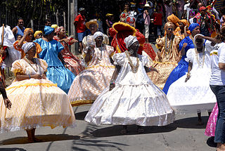

Cultura afro brasileira
Denomina-se cultura afro-brasileira o conjunto de manifestações culturais do Brasil que sofreram algum grau de influência da cultura africana desde os tempos do Brasil Colônia até a atualidade. A cultura da África chegou ao país, em sua maior parte, trazida pela escravidão africana na época do tráfico transatlântico de escravos No Brasil a cultura africana sofreu também a influência das culturas europeia e indígena, de forma que características de origem africana na cultura brasileira encontram-se em geral mescladas a outras referências culturais.
Traços fortes da cultura africana podem ser encontrados hoje em variados aspectos da cultura brasileira, como a música popular, a religião, a culinária, o folclore e as festividades populares. Os estados do Maranhão, Pernambuco, Alagoas, Bahia, Minas Gerais, Espírito Santo, Rio de Janeiro, São Paulo e Rio Grande do Sul foram os mais influenciados pela cultura de origem africana, tanto pela quantidade de escravos recebidos durante a época do tráfico como pela migração interna dos escravos após o fim do ciclo da cana-de-açúcar na região Nordeste.
Ainda que tradicionalmente desvalorizados na época colonial e no século XIX, os aspectos da cultura brasileira de origem africana passaram por um processo de revalorização a partir do século XX que continua até os dias de hoje.
Evolução Histórica
De maneira geral, tanto na época colonial como durante o século XIX a matriz cultural de origem europeia foi a mais valorizada no Brasil, enquanto que as manifestações culturais afro-brasileiras foram muitas vezes desprezadas, desestimuladas e até proibidas. Assim, as religiões afro-brasileiras e a arte marcial da capoeira foram frequentemente perseguidas pelas autoridades. Por outro lado, algumas manifestações folclóricas, como as congadas e o maracatu, assim como expressões musicais como o lundu, foram toleradas e até estimuladas.
Entretanto, a partir de meados do século XX, as expressões culturais afro-brasileiras começaram a ser gradualmente mais aceitas e admiradas pelas elites brasileiras como expressões artísticas genuinamente nacionais. Nem todas as manifestações culturais foram aceitas ao mesmo tempo. O samba foi uma das primeiras expressões da cultura afro-brasileira a ser admirada quando ocupou posição de destaque na música popular, no início do século XX.
Posteriormente, o governo da ditadura do Estado Novo de Getúlio Vargas desenvolveu políticas de incentivo do nacionalismo nas quais a cultura afro-brasileira encontrou caminhos de aceitação oficial. Por exemplo, os desfiles de escolas de samba ganharam nesta época aprovação governamental através da União Geral das Escolas de Samba do Brasil, fundada em 1934.
Outras expressões culturais seguiram o mesmo caminho. A capoeira, que era considerada própria de bandidos e marginais, foi apresentada, em 1953, por mestre Bimba ao presidente Vargas, que então a chamou de "único esporte verdadeiramente nacional".
A partir da década de 1950 as perseguições às religiões afro-brasileiras diminuíram e a Umbanda passou a ser seguida por parte da classe média carioca. Na década seguinte, as religiões afro-brasileiras passaram a ser celebradas pela elite intelectual branca.
Em 2003, foi promulgada a lei nº 10.639 que alterou a Lei de Diretrizes e Bases da Educação (LDB), passando-se a exigir que as escolas brasileiras de ensino fundamental e médio incluam no currículo o ensino da história e cultura afro-brasileira.
Religião
Os negros trazidos da África como escravos geralmente eram imediatamente batizados e obrigados a seguir o Catolicismo. A conversão era apenas superficial e as religiões de origem africana conseguiram permanecer através de prática secreta ou o sincretismo com o catolicismo.
Algumas religiões afro-brasileiras ainda mantém quase que totalmente suas raízes africanas, como é o caso das casas tradicionais de Candomblé e do Xangô do Nordeste; outras formaram-se através do sincretismo religioso, como o Batuque, o Tambor de Mina, o Xambá e a Umbanda. Em maior ou menor grau, as religiões afro-brasileiras mostram influências do Catolicismo e da encantaria e da pajelança ameríndias. O sincretismo manifesta-se igualmente na tradição do batismo dos filhos e o casamento na Igreja Católica, mesmo quando os fiéis seguem abertamente uma religião afro-brasileira.
Já no Brasil colonial os negros e mulatos, escravos ou forros, muitas vezes associavam-se em irmandades religiosas católicas. A Irmandade da Boa Morte e a Irmandade de Nossa Senhora do Rosário dos Homens Pretos foram das mais importantes, servindo também como ligação entre o catolicismo e as religiões afro-brasileiras. A própria prática do catolicismo tradicional sofreu influência africana no culto de santos de origem africana como São Benedito, Santo Elesbão, Santa Efigênia e Santo Antônio de Noto (Santo Antônio de Categeró ou Santo Antônio Etíope); no culto preferencial de santos facilmente associados com os orixás africanos como São Cosme e Damião (ibejis), São Jorge (Ogum no Rio de Janeiro), Santa Bárbara (Iansã); na criação de novos santos populares como a Escrava Anastácia; e em ladainhas, rezas (como a Trezena de Santo Antônio) e festas religiosas (como a Lavagem do Bonfim onde as escadarias da Igreja de Nosso Senhor do Bonfim em Salvador, Bahia são lavadas com água de cheiro pelas filhas-de-santo do candomblé).
Enquanto o Catolicismo nega a existência de orixás e guias, as igrejas pentecostais acreditam na sua existência, mas como demônios.
Segundo o IBGE, 0,3% dos brasileiros declaram seguir religiões de origem africana, embora um número maior de pessoas sigam essas religiões de forma reservada.
Inicialmente desprezadas, as religiões afro-brasileiras foram ou são praticadas abertamente por vários intelectuais e artistas importantes como Jorge Amado, Dorival Caymmi, Vinícius de Moraes, Caetano Veloso, Gilberto Gil, Maria Bethânia (que frequentavam o terreiro de Mãe Menininha), Gal Costa (que foi iniciada para o Orixá Obaluaye), Mestre Didi (filho da iyalorixá Mãe Senhora), Antonio Risério, Caribé, Fernando Coelho, Gilberto Freyre e José Beniste (que foi iniciado no candomblé ketu).
Arte
O Alaká africano, conhecido como pano da costa no Brasil é produzido por tecelãs do terreiro de Candomblé Ilê Axé Opô Afonjá em Salvador, no espaço chamado de Casa do Alaká. Mestre Didi, Alapini (sumo sacerdote) do Culto aos Egungun e Assògbá (supremo sacerdote) do culto de Obaluaiyê e Orixás da terra, é também escultor e seu trabalho é voltado inteiramente para a mitologia e arte yorubana.
Na pintura foram muitos os pintores e desenhistas que se dedicaram a mostrar a beleza do Candomblé, Umbanda e Batuque em suas telas. Um exemplo é o escultor e pintor argentino Carybé que dedicou boa parte de sua vida no Brasil esculpindo e pintando os Orixás e festas nos mínimos detalhes, suas esculturas podem ser vistas no Museu Afro-Brasileiro e tem alguns livros publicados do seu trabalho.
Na fotografia o francês Pierre Fatumbi Verger, que em 1946 conheceu a Bahia e ficou até o último dia de vida, retratou em preto e branco o povo brasileiro e todas as nuances do Candomblé, não satisfeito só em fotografar passou a fazer parte da religião, tanto no Brasil como na África onde foi iniciado como babalawo, ainda em vida iniciou a Fundação Pierre Verger em Salvador, onde se encontra todo seu acervo fotográfico.
Culinária
A feijoada brasileira, considerada o prato nacional do Brasil, é frequentemente citada como tendo sido criada nas senzalas e ter servido de alimento para os escravos na época colonial. Atualmente, porém, considera-se a feijoada brasileira uma adaptação tropical da feijoada portuguesa que não foi servida normalmente aos escravos. Apesar disso, a cozinha brasileira regional foi muito influenciada pela cozinha africana, mesclada com elementos culinários europeus e indígenas.
A culinária baiana é a que mais demonstra a influência africana nos seus pratos típicos como acarajé, caruru, vatapá e moqueca. Estes pratos são preparados com o azeite-de-dendê, extraído de uma palmeira africana trazida ao Brasil em tempos coloniais. Na Bahia existem duas maneiras de se preparar estes pratos "afros". Numa, mais simples, as comidas não levam muito tempero e são feita nos terreiros de candomblé para serem oferecidas aos orixás. Na outra maneira, empregada fora dos terreiros, as comidas são preparadas com muito tempero e são mais saborosas, sendo vendidas pelas baianas do acarajé e degustadas em restaurantes e residências.
Música
A música criada pelos afro-brasileiros é uma mistura de influências de toda a África subsaariana com elementos da música portuguesa e, em menor grau, ameríndia, que produziu uma grande variedades de estilos.
A música popular brasileira é fortemente influenciada pelos ritmos africanos. As expressões de música afro-brasileira mais conhecidas são o samba, maracatu, ijexá, coco, jongo, carimbó, lambada, maxixe, maculelê.
Como aconteceu em toda parte do continente americano onde houve escravos africanos, a música feita pelos afrodescendentes foi inicialmente desprezada e mantida na marginalidade, até que ganhou notoriedade no início do século XX e se tornou a mais popular nos dias atuais.